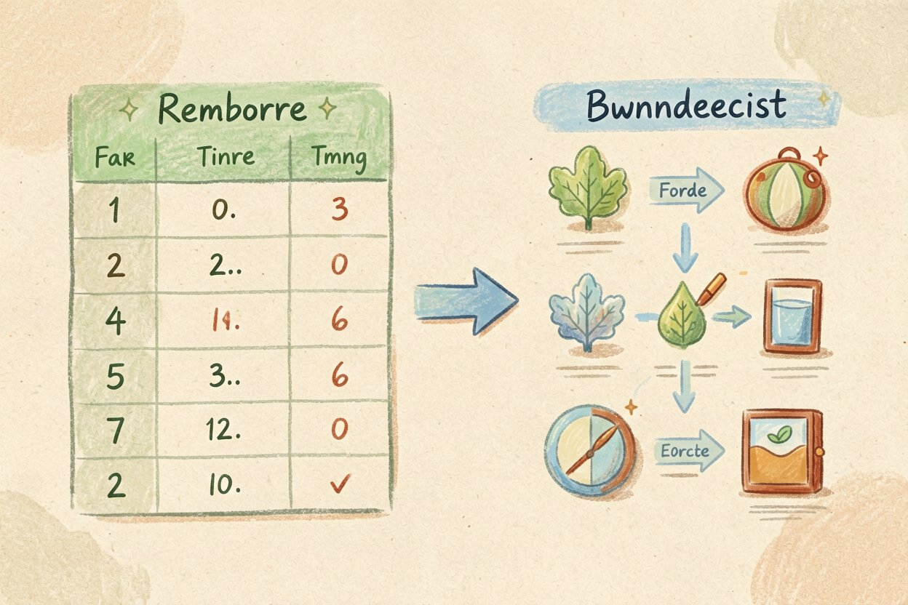
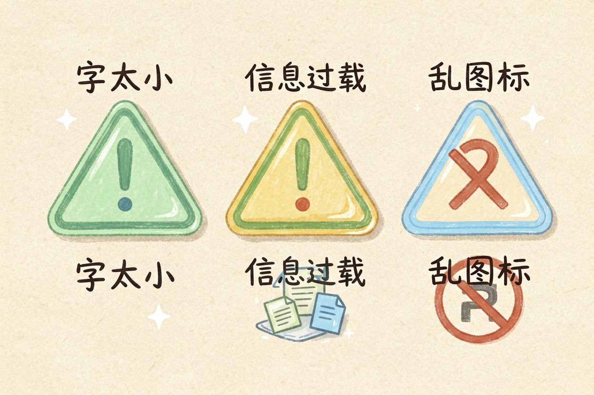
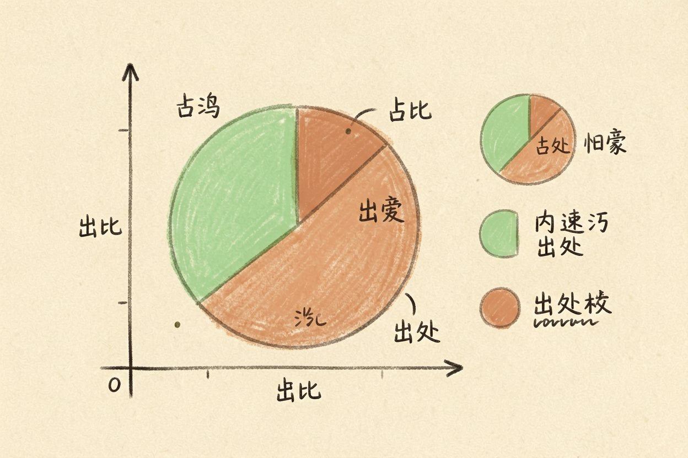
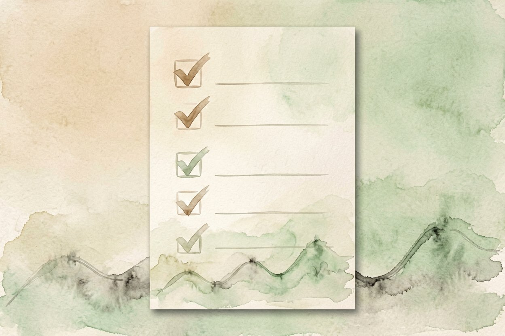

用 AI 做信息图：把数据变成一眼就懂
要把一堆数字讲清楚，纯文字没人看。用 AI 做信息图，把数据变成一眼就懂的视觉图。
AI 做信息图是什么：一句话解释

AI 做信息图，就是你给一组数据或一组要点，大模型帮你排成带图标、配色和版式的视觉图。它把「谁都能看懂」这件事从手工排版里解放出来。
它比AI 图表生成更往前一步：图表只管画折线柱状，信息图要管标题、注释、图标和阅读顺序。和它气质相近的还有AI 海报设计。
动手前先备好这三样
第一样是干净的数据。先把数字整理成表格，乱糟糟的截图它也能读，但出错概率高。
第二样是你想让人记住的结论。信息图不是把表搬上图，而是突出一个核心信息，比如「今年涨了三倍」。
第三样是用途和尺寸。发朋友圈、放报告、做长图，比例完全不同。先定尺寸，排版才不返工。
请把以下数据做成一张竖版信息图（1080x1350）：
主题：2026 上半年 AI 工具使用时长
数据：办公 42%、创作 28%、学习 18%、其他 12%
重点突出「办公占比最高」，用图标代替大段文字。定模板与配色，别让它自由发挥
数据来源和口径写在图脚，读者才敢信，也方便你日后更新数字时不用重画整张。
先定好一套配色与字号，再让 AI 填内容，出来的图才不会每版都换脸、对不齐。
给参考图最稳。找一张你喜欢的风格图让它模仿，比写一堆风格形容词靠谱。
控配色别超过三种主色。它容易堆彩虹色显得廉价，你限定色板后质感立刻上来。
和AI 思维导图一样，结构先想好再生成。乱给要点，它排出来也乱。提示词写法参考AI 提示词写法。
常见排版雷区

字太小是头号雷。它为了塞下所有字把字号缩到看不清，手机上直接废掉，你一定放大复查。
信息过载也常见。它恨不得把十件事塞一张图，结果谁都记不住。一图一结论，宁少勿多。
乱用图标添乱。它偶尔给「增长」配个下降箭头图，图文打架。图标含义要对得上再放。
好看之外，更要不误导

坐标轴别被它截断来夸大趋势。纵轴从零开始才诚实，从中间起跳会骗眼睛。
占比加起来要是一百。它偶尔会把几块饼图凑成一百二，肉眼难发现，你务必核一遍。
出处和日期要标。数据哪来的、什么时候的，写清楚读者才敢信。对外发布的图，这两行不能省。
还有一个提升阅读率的做法是控制信息层级。主标题最大、结论次之、细节最小，读者视线自然顺着走，别把所有字做成一样大，那样等于没重点。颜色也用来分层而不是装饰：用一种强调色标关键数字，其余保持中性。发布前自己当陌生人读一遍，三秒抓到核心就成了；读三遍还茫然，说明层级乱了，推倒重排比小修管用。
别为了好看就让 AI 把数据「修圆」。AI 做信息图帮的是排版和美感，数字本身的真实，永远是你不能交出去的责任。

本文信息核对于 2026-08-14。AI 产品的价格、免费额度与功能变动频繁，实际以各工具官网当前说明为准。